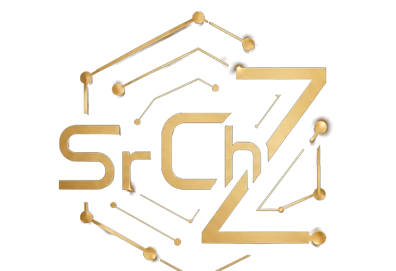

Ultrassom Convencional
Detecção e dimensionamento de descontinuidades em juntas soldadas, fundidos, forjados, eixos e chapas. Calibração em blocos V1/V2, curvas DAC/DGS e ganho de varredura.
Em campo
Structural Integrity
Inspeção · Laudos Técnicos · Formação
Quem inspeciona em campo não entrega opinião — entrega laudo. Ultrassom, ferrovia e espessura, com o método que também virou livro.
Ensaios não destrutivos executados em campo, com calibração rastreável e laudo conforme norma.
Detecção e dimensionamento de descontinuidades em juntas soldadas, fundidos, forjados, eixos e chapas. Calibração em blocos V1/V2, curvas DAC/DGS e ganho de varredura.
Em campoTrilhos e soldas aluminotérmicas (processo termítico): varredura 0°, 45°WB e 70°, calibração DiO 562 e operação de sistema multicanal. Especialidade da casa.
EspecialidadeControle de corrosão e perda de parede pela técnica eco-eco: tubulações, vasos, tanques, cascos e componentes — com mapeamento de pontos e histórico.
Em campoDescontinuidades abertas à superfície: preparação, aplicação, revelação e avaliação com critérios de aceitação conforme a norma aplicável.
Em campoDocumentação que sustenta decisão: registro fotográfico, croqui de localização, parâmetros de ensaio, critério de aceitação e parecer conclusivo.
EntregávelTreinamento e mentoria para qualificação em END — teoria, cálculo resolvido e simulados comentados. É o mesmo método dos guias abaixo.
FormaçãoTransformar o método de campo em material de estudo. Um guia por ensaio — novas trilhas chegam em breve.
O guia definitivo: física, calibração (DAC/DGS), trilhos e soldas, e 20+ questões resolvidas. EPUB + PDF.
Disponível Acessar o guia →Radiologia industrial: geração, técnicas de exposição, sensibilidade e interpretação de filmes.
Em brevePreparação, revelação, sensibilidade e critérios de aceitação de indicações superficiais.
Em breveMagnetização, técnicas úmida/seca, fluorescente e avaliação de descontinuidades.
Em breveEddy current: impedância, frequência, calibração e detecção de trincas superficiais.
Em breveFundamentos de END visual, iluminação, instrumentos e critérios de inspeção.
Em breveMe diga o componente, a norma e o prazo — eu retorno com escopo, método e o que o laudo vai cobrir.
ou descreva aqui — eu retorno com escopo, método e o que o laudo cobre